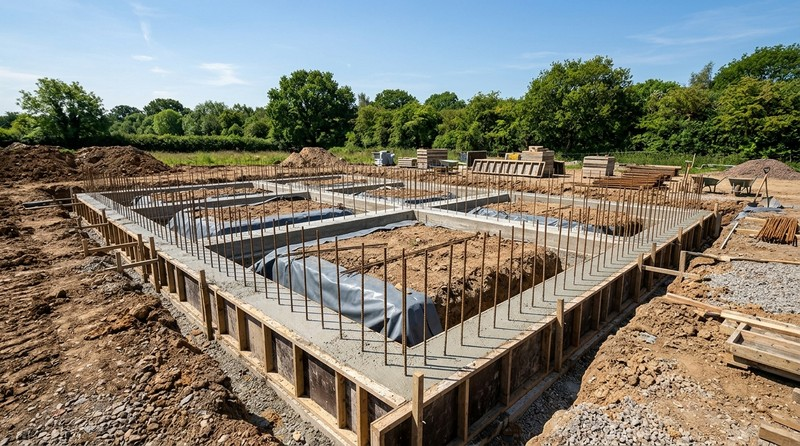
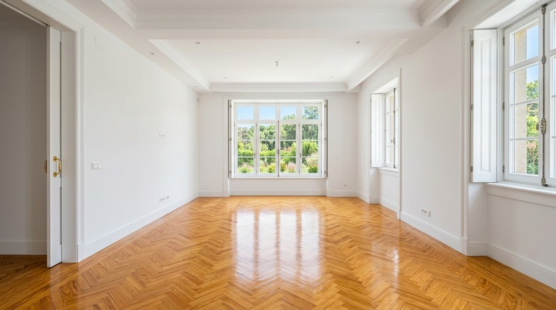
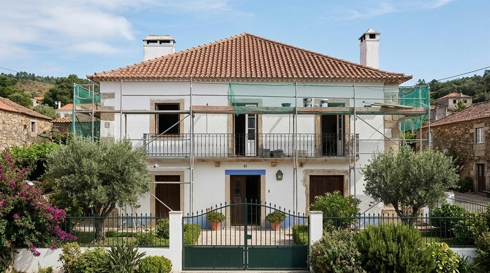
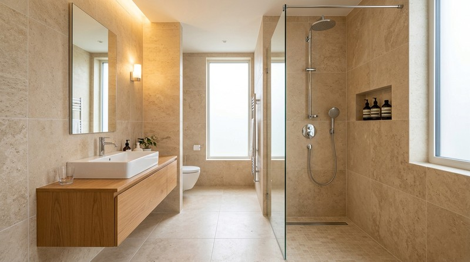
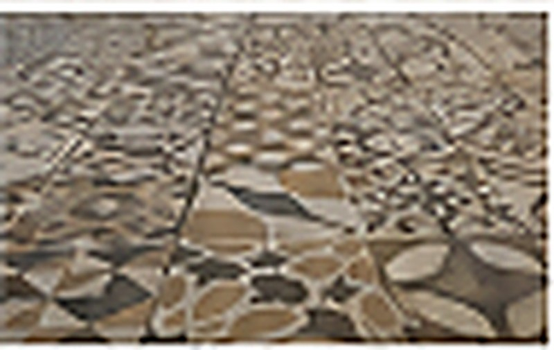
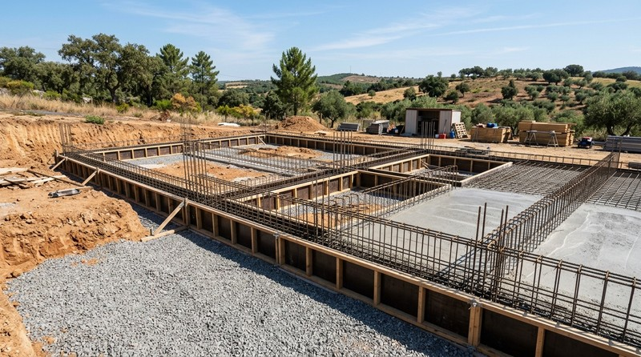
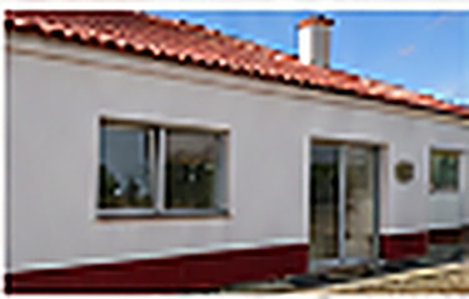
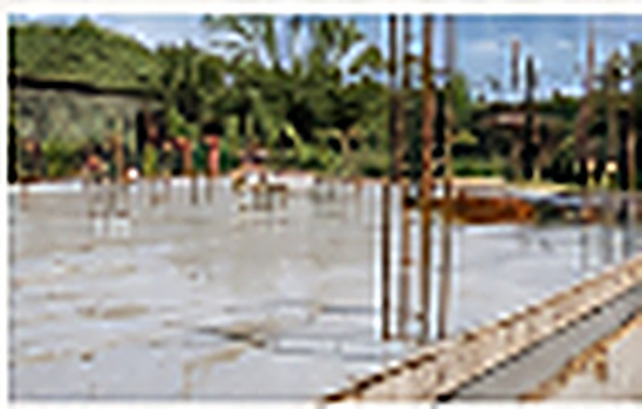

Construção
Fundações, estruturas e obras de nova construção.

Mais do que obras, entregamos espaços funcionais, modernos e feitos à medida das suas necessidades. Com qualidade, transparência e acompanhamento em todas as fases.
Da construção à remodelação, oferecemos serviços completos e personalizados, com foco na qualidade, no cumprimento de prazos e na satisfação de cada cliente.
Fundações, estruturas e obras de nova construção.

Reabilitação de edifícios, isolamento térmico e acabamentos de qualidade.

Cozinhas, casas de banho, pavimentos, pintura e muito mais.

Instalação elétrica, sanitária e acabamentos técnicos.

A Radu Construção & Remodelação é uma empresa com mais de 15 anos de experiência no setor da construção civil, especializada em obras de remodelação e reabilitação em Lisboa.
Trabalhamos com rigor, cumprindo prazos e orçamento, e com uma equipa qualificada que acompanha cada projeto do início ao fim.
Veja alguns dos nossos trabalhos e inspire-se para o seu projeto.








Fale connosco por telefone, email ou formulário.
Analisamos o espaço e as suas necessidades.
Apresentamos uma proposta clara e sem surpresas.
Acompanhamos toda a obra, do início ao fim.
“A Radu superou as nossas expectativas. Trabalho de excelência, equipa sempre disponível e um resultado final incrível. Recomendo sem hesitar!”
Preencha o formulário e conte-nos o que pretende.
Responderemos o mais brevemente possível.

Do planeamento
à entrega, estamos
consigo em todas
as etapas.